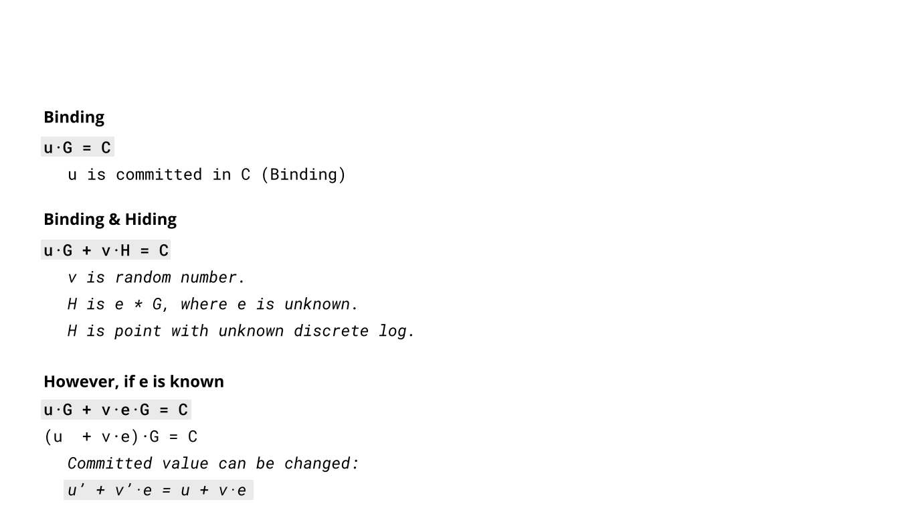

Turning EC math into Digital Signature schemes
- Private key is the discrete log of the public key
- Signature verification: Does some equation hold?
- Signer balances the equation on the field level: easy
- Verifier verifies on the group level (multiply everything with \(G\)): also easy
- Forger has to balance the equation on the group level and break the discrete log problem: hard
- Helpful mental picture: Repeated addition of \(G\) throws you around randomly in \(\mathbb{F}_p\times\mathbb{F}_p\)
- Next up: Schnorr, ECDSA
Intermezzo: Hash functions
- \(H\): Deterministically maps arbitrary-length input to \(n\)-bit output
- Empirically:
- RIPEMD160("satoshi") = 3167ab2d46ca8d5f8bca5a5411acc3c8fb481f69
- RIPEMD160("Satoshi") = 2911fe64c876962d4461cb529a0b7d61c5afe71c
- Hash function security
- Collision-resistance: Find \(x_1, x_2: H(x_1)=H(x_2)\)
- Pre-image resistance: Find \(x_1: H(x_1) = h_1\)
- Security level: Bounded at \(2^{n/2}\) by generic birthday attack
- In Bitcoin: SHA256, RIPEMD160
- \(\text{hash256}(x) = \text{SHA256}(\text{SHA256}(x))\)
- sometimes dubious reasoning
Motivating Schnorr: ZKP of a discrete log
- Assume Peggy wants to prove possession of a secret \(a\) to victor (\(P=aG\), generator \(G\))
- without disclosing any information about it (ZKP)
- Peggy chooses a random \(k\), sends \(R=kG\) to Victor
- Victor sends back a random challenge \(e\)
- Peggy sends back \(s=k+e*a\)
- Victor checks whether \(sG=R+eP\)
- Why is this sound? (intuitively)
- If a forger hadn't committed to \(R\), he could choose random \(s\) and compute \(R=sG-eP\)
- Pre-commitment forces him to either solve the discrete log of either
- A rigorous argument reduces DLOG to Schnorr ID
Non-interactive Schnorr signatures
- As we have seen, the temporal order of \(R\rightarrow e\) is crucial
- Fiat-Shamir heuristic: construct a signature scheme by using a random oracle to ensure this
- cryptographic hash function \(H\)
- Non-random challenge \(e=H(R\mid\mid m)\)
- \(s=k+e*a\)
- Verification equation \(sG\stackrel{?}{=}R+eP\)
- BIP340 also hashes \(P\) to avoid some attacks that create a valid signature for \(P'\)
Bitcoin: Why not Schnorr?
- Patented in 1991
- Patent expired in 2008, but there were almost no standards, etc.
- ECDSA is what you get when you awkwardly try to work around Schnorr
- Schnorr is in a sense the simplest possible EC signature algorithm
ECDSA I
- Alice wants to sign with the \(a, P=aG\) keypair
- Consider the equation \(uG+vP=kG\)
- Claim: Easy to balance for Alice on the field level: \(u+va=k\), e.g. choose \(k, v\) randomly, and compute \(u\)
- Claim: Hard to balance if you don't know \(a\), because:
-
Assume you could, then you can compute the private key \(a=\frac{k-u}{v}\)
-
\(\Rightarrow\) as hard as discrete-log-problem
-
Strategy: signature \((u,v,R=kG)\)
-
Two remaining problems: No pre-commitment to \(R\), no message in there
-
Two problems, two variables :)
-
Set \(u=\frac{m}{s}\), message \(m\) (often called \(z\) in ECDSA)
-
Set \(v=\frac{r}{s}\), where \(r\) is the x-coordinate of \(R\): pre-commitment to right-hand-side
- Next slide: compute \(s\), s.t. initial equation balances
ECDSA II
- Compute necessary \(s\) such that \(uG+vP=kG\) balances
- The signer can do this on the field level: balance \(u+va=k\)
- \(\frac{m}{s} + \frac{r}{s}a =k\)
- \(s=k^{-1}(m+ra)\)
- Signature \((r, s)\), two scalars
- Verfication equation on top, verifier only checks x-coordinate of resulting EC point
- Exercise: Prove private-key extraction if you reuse \(k\)
-
Playstation 3 hack
-
In fact, requirements are much harder: vulnerabilities if you can predict single bits of \(k\)
Motivating ECDSA: Pedersen Commitment

- Only one possible value results in commitment:
It is “binding”
- Once u is revealed, commitment C can be verfied.
- Binding: C can’t be changed for a given secret u.
- Information leak: Two equal values equal identical commitments.
- Random factor makes commitment “hiding”.
- Different commitment regardless of value u.
- Assumes generator of point H is unknown.
- Broken commitment scheme:
- Generator e of point H is known.
- Value u can be modified, commitment remains identical. (How?)
ECDSA
- ECDSA can be likened to a commitment scheme which can only be “broken” by owner of secret `e`.
- R point:
- Random point (blinding).
- R point x-coordinate represented on left & right of equation.
- Equation can only be balanced with secret e.
- Signed message z:
- For a given random point R, z is committed to on left side of equation.
- ECDSA Verification:
- z, r_x, s and public key P required to validate signature.
- Blackboard: verification equation
DER Encoding
- libsecp256k1 replaced OpenSSL
- OpenSSL suffers from encoding ambiguity across systems.
- libsecp256k1 removes this dependency from project.
- Strict encoding (BIP66)
- Removes encoding malleability: Consensus enforced encoding standard.
- Removes ECDSA malleability: low s values enforced.
- DER signature is 70-72 Bytes long.
- r_x length: 32/33 Bytes
- 256bit signed value, no leading nulls
- s length: 31/32 Bytes
- Low s values enforced, no leading nulls
Other Schnorr benefits
- Security proofs rely on weaker assumptions
- Signature size is a constant 64 bytes
- Signature linearity!
-
\(\sum s_iG = \sum R_i +e_iP_i\)
- Signature is an EC point: fancy math ensues